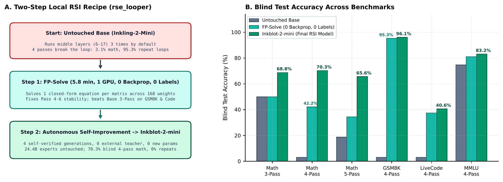
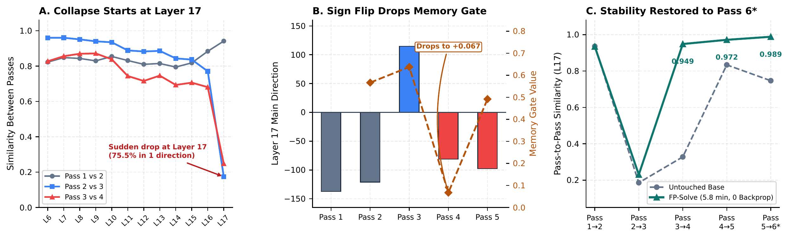
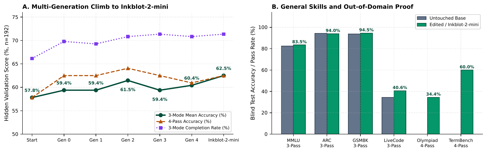

Recursive Self-Improving Loopers: Local Loop-Dynamics Editing and Self-Improvement (Inkblot-2-mini)
Inkling-2-Mini runs Layers 6–17 three times per token by default. Overriding the loop depth to 4 passes at inference time drops accuracy to 3.1% on math and GSM8K with 95.3% repeat loops. rse_looper edits only the BF16/FP32 loop-control weights (memory gates, MoE routers, short convolutions, and attention output projections) while leaving all 24.4B quantized experts untouched. Step 1 (FP-Solve) runs a closed-form Cholesky solve in 5.8 minutes on 1 GPU with zero backprop and zero labels. Step 2 runs four self-verified generations without an external teacher to build Inkblot-2-mini, improving directly over untouched default 3-pass Base on DeepScaleR-Test (50.0% → 68.8% 3-pass; 70.3% 4-pass, n=64), LiveCodeBench v6 (34.4% → 40.6%, n=32), GSM8K (93.8% → 96.1% 4-pass, n=128), and MMLU (82.5% → 83.5%, n=285).

rse_looper recipe and blind held-out accuracy across math, GSM8K, LiveCodeBench v6, and MMLU.1. What Breaks Under Forced 4-Pass Looping
thinkingmachines/Inkling-2-Mini repeats Layers 6–17 three times by default. When we override the loop depth to 4 passes at inference time (LoopConfig(num_passes=4)), untouched Base drops from 50.0% to 3.1% on DeepScaleR-Test, drops from 93.8% to 3.1% on GSM8K, and enters repeat loops on 95.3% of replies.
We trace this instability to Layer 17. On Pass 3, one single direction reverses sign (75.5% of pass-shift energy). When Pass 4 feeds that flipped state into the 48 cross-pass memory gates, the MLP memory gate drops from +0.638 to +0.067.

FP-Solve) restores pass-to-pass stability through Pass 6 in 5.8 minutes with zero backprop and zero labels.2. Step 1: Closed-Form Loop-Dynamics Edit (FP-Solve)
Because Layers 6–17 repeat on every token, every forward pass contains an internal target: Pass 3 gives healthy outputs, and Pass 4 gives unstable outputs.
rse_looper/fpsolve.py disables gradients globally, runs 48 unlabeled prompts, and solves one closed-form null-space Cholesky equation per matrix across 168 BF16/FP32 weights. In 353 seconds on 1 GPU, it stabilizes Pass 4–6 dynamics (0.949 → 0.972 → 0.989) and improves directly over default 3-pass Base on GSM8K (96.9%, 124/128), LiveCodeBench v6 (37.5%, 12/32), Olympiad (21.9%, 14/64), and WinoGrande (70.0%, 210/300).
3. Step 2: Autonomous Multi-Generation Climb to Inkblot-2-mini
With loop dynamics stabilized, rse_looper/gspo.py runs four self-verified generations without an external teacher. Each generation samples 6 answers across 3 loop modes, rewards deeper modes when they solve problems that 3-pass missed, updates only 326 BF16/FP32 control and routing tensors, and keeps only strict wins on a hidden 192-check gate.
Merging top accepted generations produces Ex0bit/Inkblot-2-mini. Hidden 3-mode accuracy climbs from 57.8% (111/192) to 62.5% (120/192), and completion rises to 71.4%.

Inkblot-2-mini (left), while general skills, coding, Olympiad math, and containerized Terminal-Bench stay intact or improve (right).4. Blind Held-Out Results (Compared Against Default 3-Pass Base)
| Blind Benchmark (Sample Size) | Passes | Default Base | FP-Solve (0-Backprop) | Inkblot-2-mini | vs. Base 3-Pass |
|---|---|---|---|---|---|
| DeepScaleR-Test (n=64) | 3-Pass | 50.0% (32/64) | 50.0% (32/64) | 68.8% (44/64) | +18.8 pp |
| DeepScaleR-Test (n=64) | 4-Pass | 3.1% (2/64*) | 42.2% (27/64) | 70.3% (45/64) | +20.3 pp |
| DeepScaleR-Test (n=64) | 5-Pass | 18.8% (12/64*) | 34.4% (22/64) | 65.6% (42/64) | +15.6 pp |
| GSM8K (n=128) | 3-Pass | 93.8% (120/128) | 96.9% (124/128) | 94.5% (121/128) | +3.1 pp |
| GSM8K (n=128) | 4-Pass | 3.1% (4/128*) | 95.3% (122/128) | 96.1% (123/128) | +2.3 pp |
| LiveCodeBench v6 (n=32) | 3-Pass / 4-Pass | 34.4 / 3.1%* | 37.5 / 37.5% | 40.6 / 40.6% | +6.2 pp |
| 2025–2026 Olympiad (n=64) | 3-Pass / 4-Pass | 20.3 / 0.0%* | 21.9 / 17.2% | 32.8 / 34.4% | +14.1 pp |
| MMLU (n=285) | 3-Pass / 4-Pass | 82.5 / 74.7%* | 81.4 / 81.1% | 83.5 / 83.2% | +1.0 pp |
| ARC-Challenge (n=300) | 3-Pass / 4-Pass | 94.3 / 90.0%* | 94.3 / 93.0% | 94.0 / 93.7% | −0.3 pp |
| HellaSwag (n=300) | 3-Pass / 4-Pass | 61.7 / 59.7%* | 61.7 / 61.3% | 61.0 / 63.3% | +1.6 pp |
| WinoGrande (n=300) | 3-Pass / 4-Pass | 68.7 / 60.7%* | 70.0 / 67.0% | 67.0 / 64.7% | +1.3 pp |
| Terminal-Bench Core (n=10) | 4-Pass | 0/10* (8.8% tests) | — | 6/10 (82.4% tests) | — |
*Base 4-pass and 5-pass scores are measured under our forced multi-pass override (LoopConfig(num_passes=4/5)). Evaluations use fixed public slices (n=32–300), greedy decoding, and open deterministic grading (rse_looper/grader.py). Independent third-party reproduction is welcomed.
5. Run Locally
pip install -e ".[dev]" pytest -W error -v rse-looper --stage both --base-model thinkingmachines/Inkling-2-Mini --gpus 0,1,2,3,4,5 --require-causal-conv1d